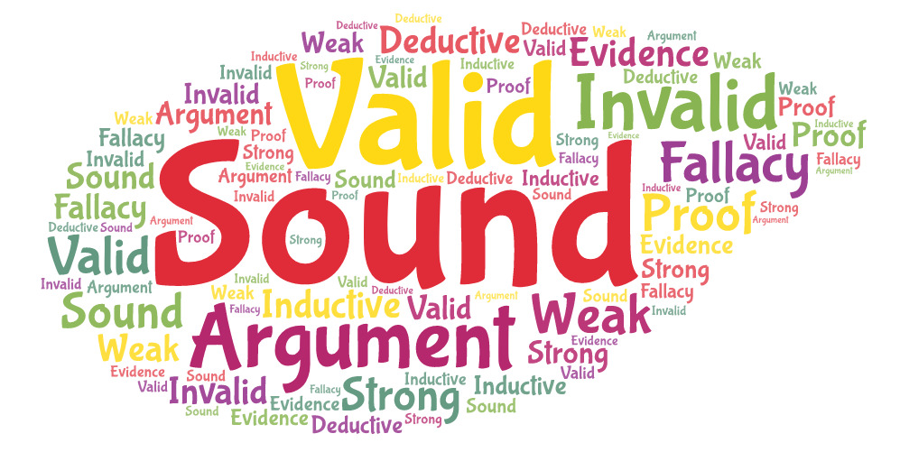

What Is a Valid Argument?
Critical Thinking basics
In a valid argument, it is not possible that the conclusion is false when the premises are true. Or, in other words: In a valid argument, whenever the premises are true, the conclusion also has to be true.
This article is part of a series on Logic and Critical Thinking. Find all the articles in this series here.
If you like reading about philosophy, here's a free, weekly newsletter with articles just like this one: Send it to me!
We use “valid” in many different ways in everyday life. We say things like “that’s a valid point,” or “his credit card number was not valid.” But in logic, “valid” has a very special meaning. Read on to learn how to use “valid” for arguments.
What does “valid” mean?
In a valid argument, it is not possible that the conclusion is false when the premises are true. Or, in other words: In a valid argument, whenever the premises are true, the conclusion also has to be true.
Easy enough. Every argument consists of a number of statements, called the premises, which together offer support for the belief that another statement, called the conclusion, is true. For example:
Premise 1: If I am hungry, I will go to the restaurant down the street.
Premise 2: I am hungry.
Conclusion: I will go to the restaurant down the street.
Here, the premises, taken together, support the belief that the conclusion is true.

It is important that in a valid argument the premises make it certain (not only likely) that the conclusion is true. In the example above, assuming that the premises are true, the conclusion must also be true. If the conclusion was not true, then at least one of the premises would also not be true.
An argument like that is called a deductive argument. On the other hand, if the premises only make it likely, but not certain, that the conclusion is true, then the argument is called an inductive argument. For example:
Premise 1: If I am hungry, I sometimes go to the restaurant down the street.
Premise 2: I am hungry.
Conclusion: I go to the restaurant down the street.
Here it is not certain that I will indeed go to that restaurant, because I do so only sometimes. So this time might be one of the times where I don’t go there. From this argument alone it is not possible to be sure about whether I will go to that restaurant or not.
Invalid and not-valid arguments
It is important to see that only deductive arguments can be valid. Do you see why? We said that:
In a valid argument, it is not possible that the conclusion is false when the premises are true.
And also that a deductive argument is one where the conclusion is certain; while an inductive argument is one where the conclusion is probable, but not certain.
Now, if we require that “it is not possible” that the conclusion is false when the premises are true, then necessarily we need valid arguments to be deductive, since only deductive arguments allow us to be certain of their conclusions.
This brings with it a little difficulty about how we should speak about arguments that are not valid. Clearly, following our definitions, no inductive argument can be valid; so how do we call inductive arguments? We could call them “invalid,” since they are not valid. But this creates the problem that, if all inductive arguments were considered “invalid,” how would we go about distinguishing between “better” and “worse” inductive arguments?
For example, look at these two arguments:
Premise 1: If I am hungry, I sometimes go to the restaurant down the street.
Premise 2: I am hungry.
Conclusion: I go to the restaurant down the street.
Premise 1: If I am hungry, I almost never go to the restaurant down the street.
Premise 2: I am not even hungry now.
Conclusion: I go to the restaurant down the street.
Obviously, although none of the two conclusions is certain, the first argument’s conclusion is much more probable to be true than the second one. The second is so improbable that we would actually like to say that it is almost totally out of the question. This second argument offers practically no support at all for its conclusion. So we would like to say that it is invalid in the sense that it constitutes a “fallacy,” or an error in argumentation. (Look at this article for a gentle and detailed explanation of different fallacies.)
But if we reserve “invalid” for “bad” arguments, then how do we call arguments like the first one just above? They are “good” arguments, but they are not “valid,” since for a valid argument that conclusion must be certain.
So this is why we usually speak of arguments that are:
- “Valid” (deductive arguments, conclusion is certain to be true);
- “Non-valid” (inductive arguments, strong or weak, conclusion is more or less probable);
- and “invalid” (bad arguments, both deductive and inductive, where the conclusion is not supported by the premises at all).
Other books and teachers of logic prefer a different categorisation:
- “Valid” (deductive arguments, conclusion is certain to be true);
- “Invalid” (inductive arguments, strong or weak, conclusion is more or less probable), plus deductive arguments that are not valid;
- and “bad” inductive arguments (where the conclusion is not supported by the premises at all).
This is really a matter of taste. It comes down to the fact that we need three different categories, but the valid/invalid dichotomy gives us only two; so we have to decide what we want “invalid” to mean in regard to inductive arguments (which can never be valid, but they can still be “good” arguments).
Valid and sound arguments
Another interesting point is the distinction between “valid” and “sound” arguments.
We call valid arguments with true premises (and therefore a true conclusion), sound arguments.
Look at this example:
Premise 1: Hong Kong is in the south of China.
Premise 2: Beijing is in the north of China.
Premise 3: The south of China is warmer than the north of China.
Conclusion: Hong Kong is warmer than Beijing.
This is valid and its premises are true. So this is a sound argument.
On the other hand:
Premise 1: Elephants are smaller than goldfish.
Premise 2: Goldfish are smaller than ants.
Conclusion: Therefore, elephants are smaller than ants.
In this second case, the premises are clearly not true. But what would happen if they were true? Let’s for a moment assume that we live on an alternative Earth, in which these two premises are true: in which elephants are smaller than goldfish and goldfish are smaller than ants. Would then elephants be smaller than ants? — Clearly, yes. They would have to be!
So, to go back to the definition of a valid argument: If we assume that the premises of the last argument above were true, then the conclusion would have to be true also; and this makes it a valid argument. So for the validity of the argument it does not matter whether the premises are actually true or not. Only whether if they were true the conclusion would have to be true, which is the case here.
But, since the premises are not actually true, this argument is valid but not sound. (Remember that in sound arguments that premises have to actually be true.)

Valid arguments with contradictory premises
This brings us to a last point that is easy to overlook. Is the following argument valid?
Premise 1: New York is in Russia.
Premise 2: New York is not in Russia.
Conclusion: Germany is in Africa.
You might be tempted to say no. But look again at the definition of validity:
In a valid argument, it is not possible that the conclusion is false when the premises are true.
Or, in other words: a valid argument can never have true premises and a false conclusion. What about this here? Can it have true premises and a false conclusion? Or, just ignore the conclusion: can this ever have true premises?
No. This argument can never have both premises be true, simply because the two premises contradict each other. Wherever New York may be, it cannot be both in Russia and not in Russia. One of the two premises will always have to be true and the other will have to be false.
So, in this case, it is impossible that we have (all) true premises and a false conclusion, simply because we cannot have all premises be true at the same time. Consequently, following our definition, this argument is valid, since it is impossible for it to have true premises and a false conclusion (but the conclusion doesn’t matter in this case; it cannot have true premises, period).
In summary, if an argument has contradictory premises, it is always valid, no matter what the premises or the conclusion are. Conversely, such an argument can never be sound, because this would require both its premises to be true, which cannot happen if they contradict each other.
What are “good” arguments?
Now, we might be confused about people using “valid” to mean “good” (as in: “this is a valid point”). If we speak in terms of logic, “good” is different from “valid.” You saw above the argument with New York being in Russia. This is valid, but nobody would call this a “good” argument.
Also, have a look at that:
Premise 1: It is 7:30 in the morning.
Premise 2: My bedroom walls are painted white.
Conclusion: It will rain today or it will not rain today.
Is this a valid argument? Actually, it is. The conclusion can never be false, so if the premises are true, the conclusion will also be true (since it can never be false). But is it a good argument? No, because the premises don’t actually give any support to the conclusion.
Another problem we can see here:
Premise 1: It is 7:30 in the morning.
Premise 2: My bedroom walls are painted white.
Conclusion: Therefore, it is now raining outside.
Even assuming that both premises and the conclusion are true, nobody would think that this is a good argument. Why? Because the premises don’t give any support to the conclusion. If the conclusion is true, it is only accidentally true and not because these particular premises contribute to its truth. So the premises, besides being true, must also be relevant to the argument’s conclusion.
Or, how about this:
Premise 1: I like ice-cream.
Conclusion: Therefore, I like ice-cream.
Is it valid? Certainly. Is the premise true? Yes. Is it therefore a sound argument? Yes. Is it a good argument? Not so much. We feel that it lacks evidence for its conclusion, because the conclusion just repeats the premise. This argument is circular.
What can we conclude from all this?
A good argument is one where the premises provide strong reasons to believe in the truth of the conclusion. That means that a good argument:
- if it is a deductive argument, it should be sound (and, therefore, also valid);
- if it is an inductive argument, it should be strong;
- its premises should be relevant to the conclusion;
- and it should not be circular, contain a contradiction in its premises, or have a conclusion that is always true.
That’s all about valid and invalid, good and bad and sound arguments. If you enjoyed this and would like to read more, you can subscribe right here. If you have questions or something to add, please feel free to leave a comment!
Your ad-blocker ate the form? Just click here to subscribe!
◊ ◊ ◊
Andreas Matthias on Daily Philosophy:
Cover image created using WordArt.